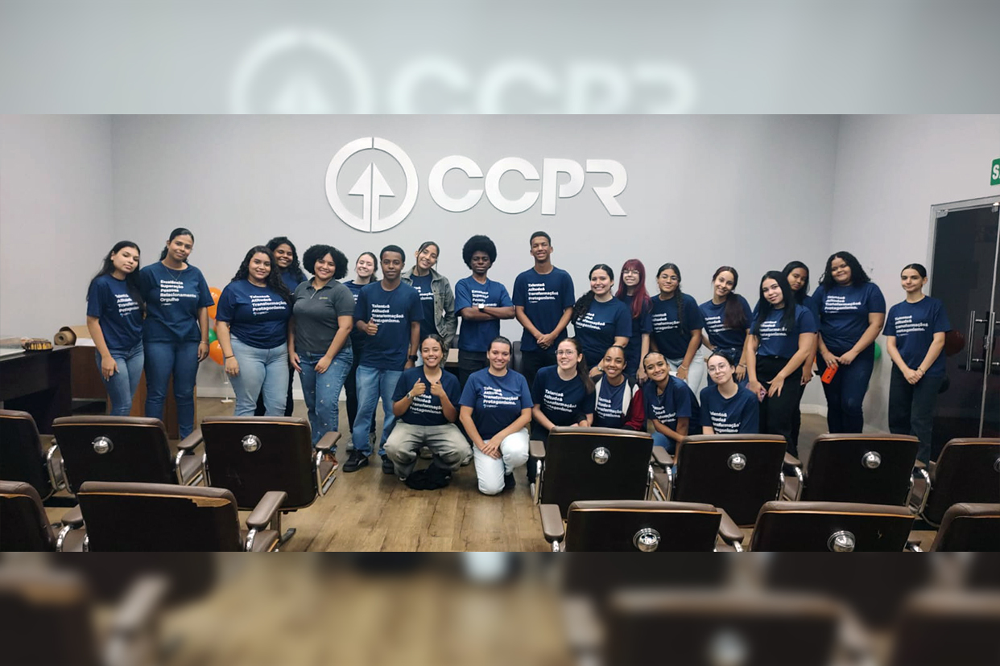
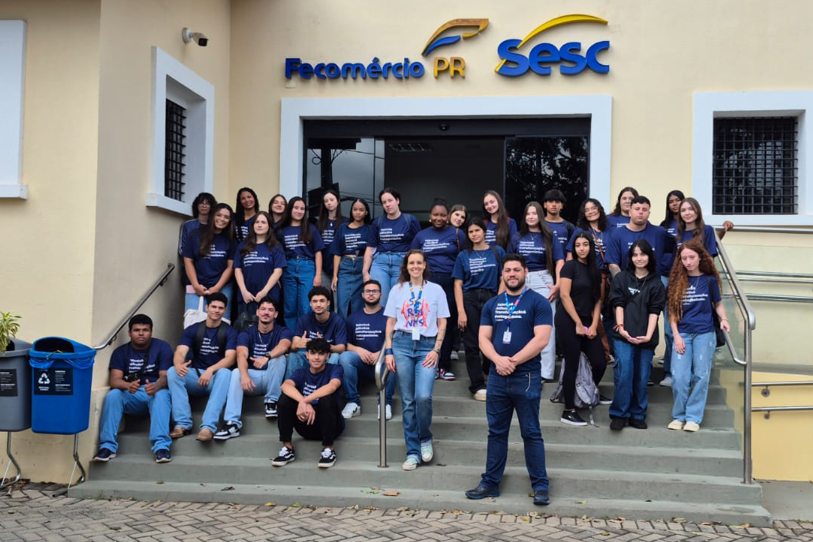

A turma 15372, da unidade de Contagem (MG), participou de uma visita técnica à Cooperativa Central de Produtores Rurais (CCPR), proporcionando aos jovens uma imersão no universo do agronegócio e do cooperativismo. Durante a experiência, os aprendizes conheceram a trajetória da cooperativa, sua atuação no desenvolvimento do setor agropecuário e a importância da união entre produtores para o crescimento coletivo.
Recebidos pela psicóloga organizacional Tawanne, os jovens participaram de uma conversa sobre missão, valores e propósito institucional da CCPR, além de uma dinâmica em grupo que propôs a criação de cooperativas voltadas para soluções na cidade de Contagem. A atividade aproximou teoria e prática, estimulando criatividade, pensamento estratégico e trabalho colaborativo entre os participantes.
Confira os registros da visita técnica
As turmas 15465 e 16384, da unidade de Londrina (PR), participaram de uma atividade externa organizada pelos instrutores Marcos Pinheiro e Sonia Lemes no Sesc Cadeião Cultural. No marco das atividades do mês dos povos indígenas, os jovens vivenciaram uma experiência de imersão histórica e cultural, guiada pela historiadora Marina Stuchi, refletindo sobre a importância da preservação das culturas originárias e sua relação com a sociedade contemporânea.
Durante a visita, os participantes acompanharam a exibição do filme A Queda do Céu, obra inspirada no livro do xamã Davi Kopenawa e do antropólogo Bruce Albert, que aborda a cosmovisão Yanomami e os impactos da exploração ambiental sobre os povos indígenas. A atividade promoveu reflexões sobre sustentabilidade, diversidade cultural e cidadania, fortalecendo o pensamento crítico dos jovens por meio da arte e da educação patrimonial.
Acompanhe os registros da visitaAs turmas 14396 e 13539, da unidade de Belém (PA), protagonizaram a criação da Empresa Júnior Informa Jovem, iniciativa que nasceu da integração colaborativa entre os grupos e fortaleceu o protagonismo juvenil, a criatividade e o senso coletivo dos participantes. A construção da nova identidade foi proposta pelos próprios jovens, demonstrando maturidade, trabalho em equipe e compromisso com uma atuação voltada à informação, inovação digital e impacto social.
Além da criação da empresa júnior, os aprendizes desenvolveram atividades voltadas à expressão criativa e produção de conteúdo, como o projeto Espro que Eu Vejo e a primeira edição do Informa Jovem. As iniciativas abordaram temas relacionados à saúde mental, identidade, empreendedorismo jovem e projeto de vida, incentivando pensamento crítico, comunicação e desenvolvimento de competências socioemocionais.
Acesse os materiais produzidos pelos jovensA turma 16793, conduzida pelo instrutor Cristiano Patrocínio, participou de uma atividade sobre Políticas de RH voltada à produção de conteúdos em áudio e vídeo sobre a importância do plano de vida e da carreira. A proposta incentivou reflexão, comunicação e protagonismo, permitindo que os jovens explorassem diferentes perspectivas sobre desenvolvimento profissional e projetos de futuro.
A atividade contou com entrevistas realizadas com colaboradores de diferentes áreas do Espro e também com relatos dos próprios jovens, fortalecendo a troca de experiências entre gerações e equipes. O material produzido evidenciou a diversidade de perspectivas sobre o mundo do trabalho e resultou em conteúdos colaborativos que em breve serão compartilhados com todos.
Confira os vídeos produzidos pelos jovensNo Rio de Janeiro (RJ), a instrutora Camila Meirino desenvolveu uma série de atividades voltadas à educação financeira utilizando as plataformas Khan Academy e Padlet, conectando o conteúdo do plano de treinamento aos cinco pilares do Espro. Por meio da Khan Academy, os jovens participaram de atividades alinhadas à BNCC, com vídeos, exercícios e conteúdos personalizados que estimularam o aprendizado de conceitos matemáticos aplicados ao consumo consciente e à tomada de decisão financeira.
Como etapa prática e colaborativa, os participantes utilizaram o Padlet para construir murais virtuais com reflexões, análises e apresentações sobre hábitos de consumo e planejamento financeiro. A atividade incentivou a organização de ideias, comunicação, pensamento crítico e troca de perspectivas entre os jovens, fortalecendo competências relacionadas à excelência, ao relacionamento e ao protagonismo.
Explore os materiais desenvolvidos nas plataformas digitaisDurante uma substituição na turma 16561, da unidade de Contagem (MG), a instrutora Keliane da Silva vivenciou um momento de troca e reflexão ao lado dos jovens durante o desenvolvimento do projeto Espro que eu vejo. De forma espontânea, os participantes começaram a escrever nos braços uns dos outros os cursos e as universidades que desejam para o futuro, transformando a atividade em uma experiência simbólica sobre sonhos, propósito e construção de trajetórias profissionais.
A partir desse momento, a turma participou de uma roda de conversa sobre escolhas, oportunidades e o desenvolvimento de um “Eu do futuro”, compartilhando expectativas acadêmicas e profissionais. Durante o encontro, os jovens também refletiram sobre o significado do Espro em suas vidas, destacando temas como aprendizado, desenvolvimento e ampliação de perspectivas. A atividade reforçou a importância de espaços de escuta e acolhimento na formação dos participantes, fortalecendo o protagonismo juvenil e a construção consciente de projetos de vida.
Acesse os registros compartilhados pela turmaA turma 16686, da unidade de Salvador (BA), participou de uma atividade pedagógica conduzida pela instrutora Nadja Cezar, que utilizou a produção de pizzas como ferramenta prática para trabalhar o tema Educação Financeira – ferramentas e recursos. Durante a dinâmica, os jovens colocaram literalmente a “mão na massa”, vivenciando conceitos relacionados a planejamento, gestão de recursos e custos de insumos de forma interativa e colaborativa.
A proposta proporcionou uma experiência de aprendizagem leve, criativa e conectada ao cotidiano, incentivando o desenvolvimento de competências como organização, trabalho em equipe e tomada de decisão. A atividade reforçou a importância de metodologias inovadoras no processo educativo, aproximando teoria e prática de maneira significativa e saborosa para os participantes.
Navegue nos registros da atividadeDurante o mês de março, as turmas da unidade de Goiânia (GO) participaram de diferentes atividades do programa Gestores do Futuro, unindo criatividade, pensamento estratégico e aprendizado colaborativo. Entre as ações desenvolvidas, os jovens produziram um gibi protagonizado pelo personagem Super Espro, refletindo sobre os desafios do primeiro contato com o mercado de trabalho, além de aplicarem ferramentas de gestão da qualidade, como PDCA, Gráfico de Pareto e Histograma, em atividades práticas realizadas pelas empresas fictícias das turmas.
O período também contou com produções audiovisuais para o projeto Espro que eu vejo, incentivando os participantes a compartilhar percepções, experiências e aprendizados construídos ao longo da formação. As iniciativas reforçaram competências como protagonismo, trabalho em equipe, criatividade e comunicação, aproximando os jovens de vivências alinhadas ao ambiente corporativo e ao desenvolvimento profissional.
Conheça os materiais e vídeos produzidos pelas turmasComo parte das atividades do programa Gestores do Futuro, a turma 015831 de Produção do instrutor Leidson Leite, em Recife (PE), participou de uma dinâmica sobre sustentabilidade, diversidade e acessibilidade nas organizações. Durante a atividade, os jovens identificaram três áreas da empresa em que a acessibilidade poderia ser aplicada de forma mais efetiva e desenvolveram maquetes, representando soluções inclusivas para esses espaços.
Além da construção das maquetes, os participantes realizaram apresentações para outras turmas, compartilhando reflexões sobre inclusão e responsabilidade social no ambiente corporativo. Os trabalhos também ficaram expostos na principal área de circulação da unidade ao longo da semana, ampliando o alcance da iniciativa e incentivando o diálogo sobre acessibilidade no cotidiano das organizações.
Acesse os registros da atividadeE aí, curtiu o novo formato e as informações do Minuto do Instrutor? Lembre-se de compartilhar com a gente o que tá rolando em sua unidade e dê sugestões de conteúdo!
Deixe um comentário aqui 👇🏼. Sua opinião é importante para nós!